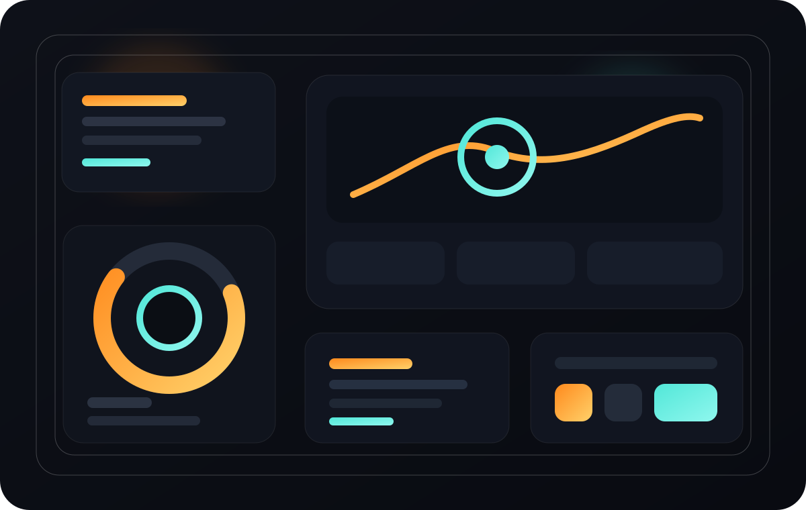
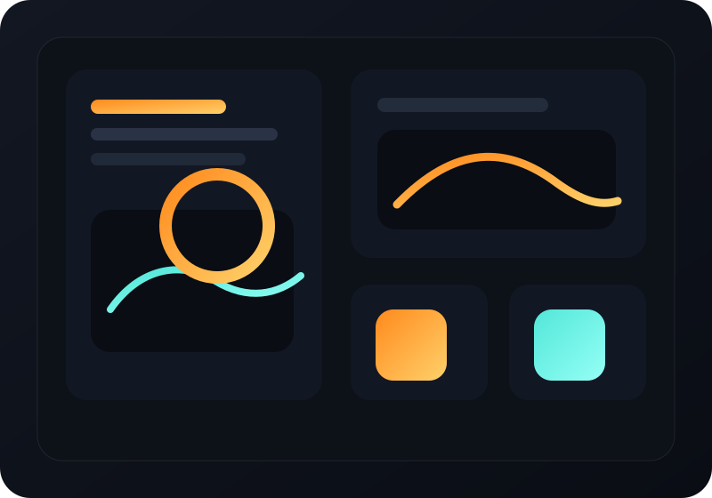
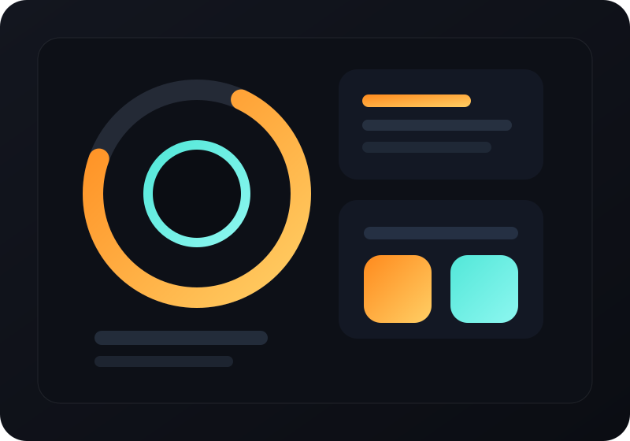
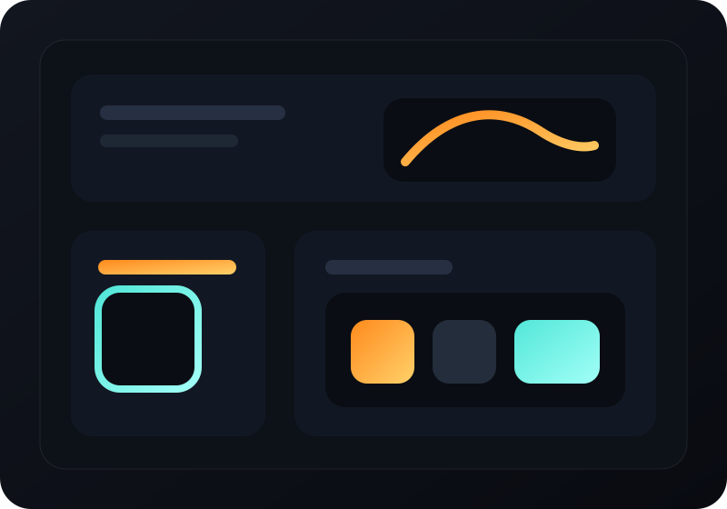

Cinematic art direction with sharper hierarchy.
Dark depth, warm glow, bold type, and surfaces that feel alive.
Interactive portfolio / front-end systems / launch pages
I design and build bold digital experiences for founders, creatives, and teams that want their site to feel immersive on first scroll and clean in production.
Dark depth, warm glow, bold type, and surfaces that feel alive.

Fast static delivery, clear sections, and no fragile setup required.
Showcase
Inspired by gaming launch pages, but aimed at personal brands, products, and ambitious creative teams.

Neon Atlas
A sharp hero, strong proof sections, and a cleaner conversion path for founders shipping something new.

Arena Signal
Built for creatives who want atmosphere, stronger contrast, and a visual identity that does not collapse on mobile.

Boss Level OS
A direction for product teams, agencies, and studios that want richer storytelling without sacrificing structure.
Build Paths
For launches that need a category-defining first impression, a clear story, and pages that move people toward action.
For portfolios that should feel like an experience rather than a list of blocks on a generic theme.
For agencies and product teams that want a clearer system, richer storytelling, and a handoff that does not become a maintenance problem.
Launch Lab
The visual layer matters, but the page also needs pacing, readable contrast, responsive integrity, and a structure that can grow without breaking its own mood.
Lock the tone, contrast, and visual promise before sections pile up.
Turn that direction into cards, layouts, and movement that feels cohesive.
Add reveals, hover depth, and transitions that support attention.
Keep the final result fast, editable, and easy to deploy.
Process
Clarify what the site needs to communicate in its first few seconds.
Shape the interface, color logic, and content rhythm around that signal.
Translate the direction into a responsive front-end that still feels premium.
Deliver the final build with clean structure, deploy support, and no dead weight.
Contact
If you want something darker, sharper, and more cinematic than a standard portfolio template, start here.